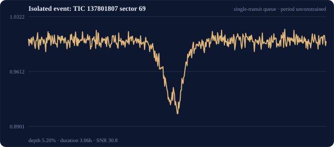
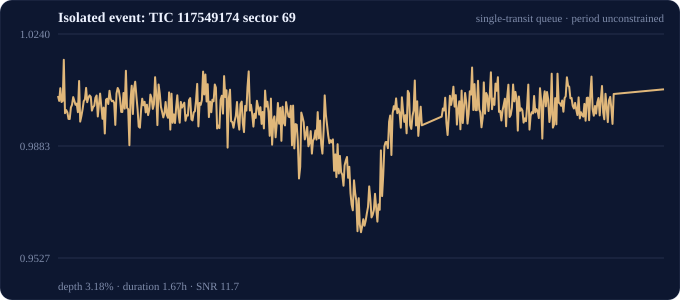

Measurements establish robustness and source-localisation evidence; they do not establish an orbital period or confirm a planet.
Sector 69 at BTJD 3204.41835; depth 0.0520; duration 3.06 h; SNR 30.8. Period: unconstrained.
| Evidence | Result |
|---|---|
| SAP_FLUX | depth 0.05391 · SNR 86.2 · 55 in / 409 out points |
| PDCSAP_FLUX | depth 0.05826 · SNR 82.7 · 55 in / 409 out points |
| Reduction consistency | pass |
| PDCSAP shape | V-shaped |
| Centroid shift | not-significant |
| Bright Gaia neighbour | review |
| Check | Status |
|---|---|
| sap_pdcsap | pass |
| centroid_shift | not-significant |
| bright_gaia_neighbor | review |
| transit_shape | V-shaped |
| period | unconstrained |
| pixel_difference_image | required |
| radial_velocity | not-obtained |
| ground_multicolor | not-obtained |

Sector 69 at BTJD 3183.13348; depth 0.0318; duration 1.67 h; SNR 11.7. Period: unconstrained.
| Evidence | Result |
|---|---|
| SAP_FLUX | depth 0.02826 · SNR 34.8 · 30 in / 401 out points |
| PDCSAP_FLUX | depth 0.03114 · SNR 35.7 · 30 in / 401 out points |
| Reduction consistency | pass |
| PDCSAP shape | flat-bottomed |
| Centroid shift | not-significant |
| Bright Gaia neighbour | review |
| Check | Status |
|---|---|
| sap_pdcsap | pass |
| centroid_shift | not-significant |
| bright_gaia_neighbor | review |
| transit_shape | flat-bottomed |
| period | unconstrained |
| pixel_difference_image | required |
| radial_velocity | not-obtained |
| ground_multicolor | not-obtained |
